BT · kₚ = 10 · mₛ = 1.5
宇宙结构的三维演化
Cosmic structure in motion.
固定粒子身份，观察暗物质从近乎均匀的初始状态形成丝状结构与晕。共动盒子为 37.114 Mpc（25 Mpc/h），每个原始快照含 1024³ 个粒子。
A fixed ParticleID cohort follows the formation of filaments and halos in a 37.114 comoving Mpc (25 Mpc/h) box. Each original snapshot contains 1024³ dark matter particles.
纯粒子演化 / Particle-only evolution
当前默认：纯粒子、统一冷白色、深色背景。显示固定 ID 抽样的 1M 粒子，不是全部 1024³ 粒子；不使用密度体或背景星点。
Particle-first default: a fixed 1M ParticleID sample in uniform cool-white on a dark background, not all 1024³ particles. No density volume or decorative stars.
固定相机，观察时间演化 / Fixed camera, evolving structure
下载固定相机视频 / Download fixed-camera video · 5.92 s · 1280 × 720 · 12 fps · 1M particles
覆盖 57 个已有快照的时间范围，按固定 ParticleID 和周期最小镜像插值，输出 71 个显示帧；字幕显示实际 a/z，插值帧另有标注。显示帧不是等 cosmic time 间隔。
71 display frames span the existing 57-snapshot sequence, using fixed ParticleIDs and periodic minimum-image interpolation. Labels show metadata-derived a/z and identify interpolated frames. Display frames are not equally spaced in cosmic time.
固定晚期快照，缓慢环绕 / Frozen late snapshot, slow orbit
下载环绕视频 / Download orbit video · 6 s · 1280 × 720 · 12 fps · snapshot 0056 · z = 0
这段只改变相机，粒子时间固定，便于单独评价纵深和镜头效果。
Only the camera moves; particle time is fixed, separating depth and camera motion from temporal evolution.
两段均为 Blender 预渲染视频，可播放、暂停、拖动；网页内不提供实时三维旋转。GPU、显存和真实视口 FPS 尚未验证。
Both are pre-rendered Blender videos with playback and seeking, not interactive 3D views. GPU rendering, VRAM and actual viewport FPS remain unverified.
同设置配色对比 / Matched color comparison
同一 snapshot、相机、1M cohort 和 1080p 输出；点半径 0.0003、发光强度 1、曝光 −0.3。统一颜色更突出结构；speed 使用固定 0–1000 km/s 色标，超范围截色，不逐帧自动拉伸。
Same snapshot, camera, 1M cohort and 1080p settings: radius 0.0003 in box units, emission 1, exposure −0.3. Uniform color emphasizes morphology; speed uses a fixed, clipped 0–1000 km/s scale without per-frame rescaling.
{kind=link}
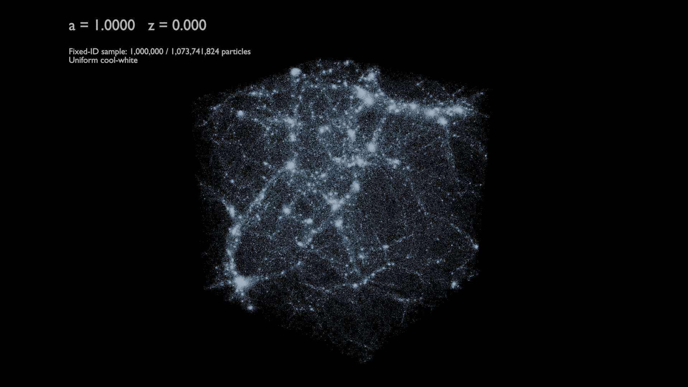
{kind=link}
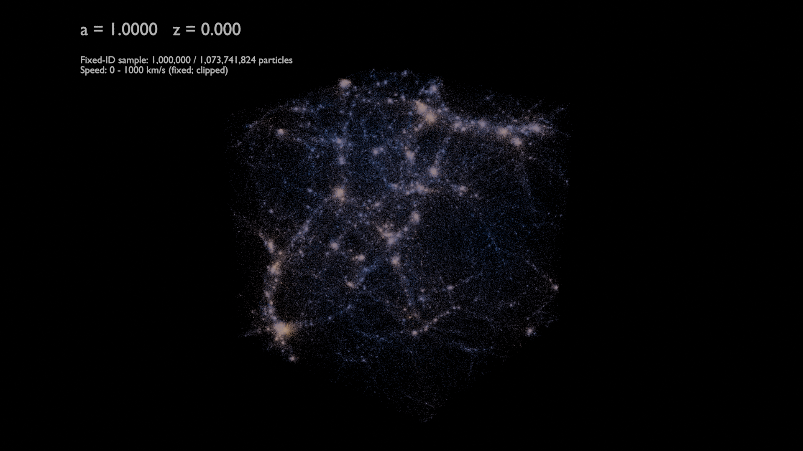
本轮 1080p、Cycles CPU、24 samples：100k / 500k / 1M 分别为 1.37 / 1.64 / 1.90 秒/帧；1M 软件 Eevee 为 46.97 秒/帧。设置并非同质量标定，不代表 GPU 性能。
This CPU trial: 1080p Cycles, 24 samples, 1.37 / 1.64 / 1.90 seconds per frame for 100k / 500k / 1M. Software Eevee: 46.97 seconds for 1M. These are not quality-matched engine benchmarks or GPU measurements.
早期 Volume / Hybrid 实验归档 / Earlier volume and hybrid experiments
以下为此前试验，不是当前默认展示。密度体仅含早、中、晚三个时刻。
Historical experiments, not the current default. Density volumes cover only three epochs.
旧版 Hybrid 视频 / Previous hybrid preview · 100k · 640 × 360 · 5 fps · 14.2 s
三个时期，三种表示 / Three epochs, three representations
静帧使用 1M 固定粒子；密度体始终来自全体粒子。点击图像查看原图。
Stills use a fixed 1M cohort; volumes always use the full particle population. Open any image at full resolution.
{kind=link}
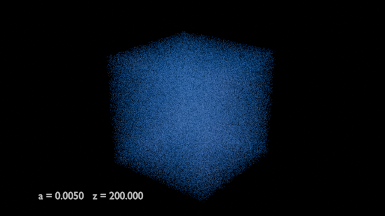
{kind=link}
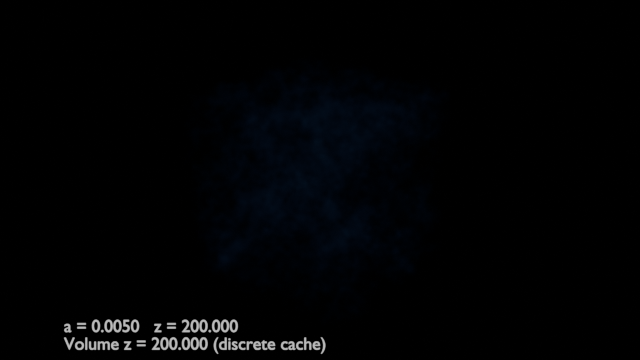
{kind=link}
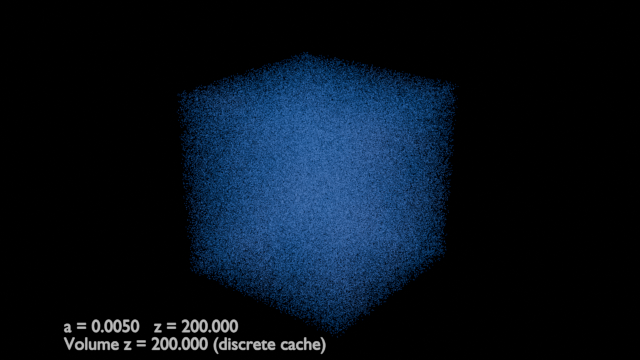
{kind=link}
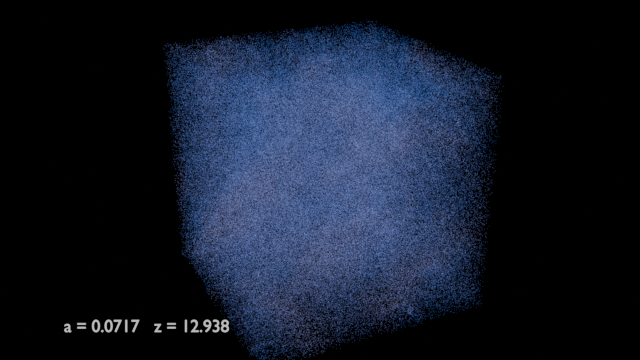
{kind=link}
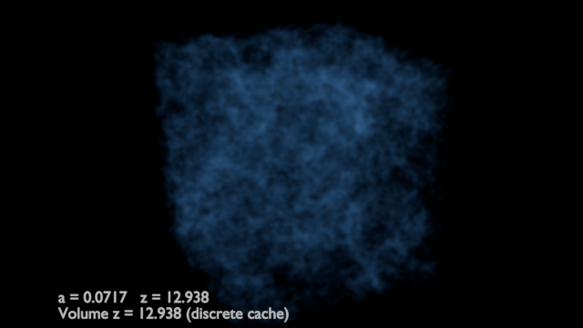
{kind=link}
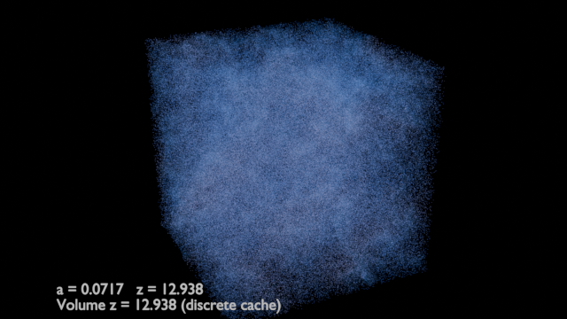
{kind=link}
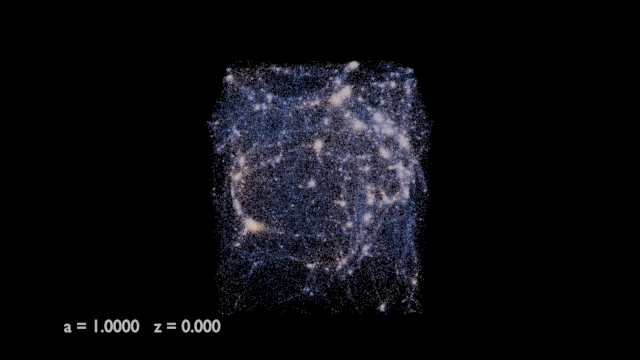
{kind=link}
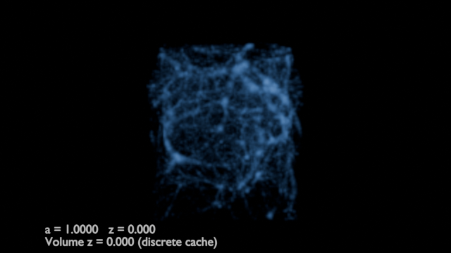
{kind=link}
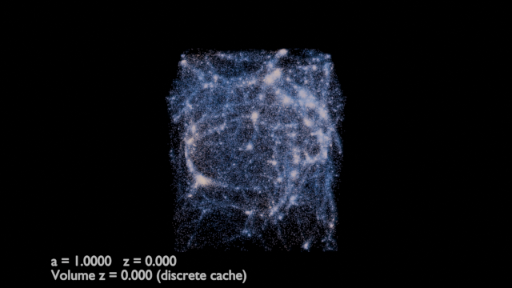
方法与下载 / Methods & downloads
- 粒子优先场景更新包 / Particle-first scene update · 32 MB — 覆盖原完整包使用；不含粒子缓存。 Requires the previous full cache bundle.
- Original MVP pipeline report / 初版 MVP 流程报告
- Original MVP performance report / 初版 MVP 性能报告 — CPU measurements; GPU / viewport FPS unmeasured.
- Scripts + configuration / 脚本与配置 — source only; no scene/cache or raw HDF5.
- Media provenance + SHA-256 / 媒体来源与校验
完整约 1.2 GB 的 Blender 场景与外部缓存包保存在项目 HPC 目录，未放入本站。脚本包不是可直接打开的完整场景。全部 57 帧的 1M 粒子均匹配成功，无所选 ID 缺失或重复；原始 HDF5 未修改。
The complete approximately 1.2 GB Blender scene and external-cache bundle remains on project HPC storage and is not hosted here. The source ZIP is not a ready-to-open scene. All selected IDs match in all 57 frames, with no missing or duplicate selected IDs. Original HDF5 files remain unchanged.
渲染：Blender 4.5.3 LTS。建议 100k 用于交互预览、1M 用于高质量展示；当前默认纯粒子，Volume 仅保留手动开关。旧报告中的 Hybrid 推荐已由本页更新。
Rendered in Blender 4.5.3 LTS. Recommended: 100k for interactive previews and 1M for higher-quality display, The current default is particles only, with an optional manual Volume toggle. This page supersedes the hybrid recommendation in the original reports.